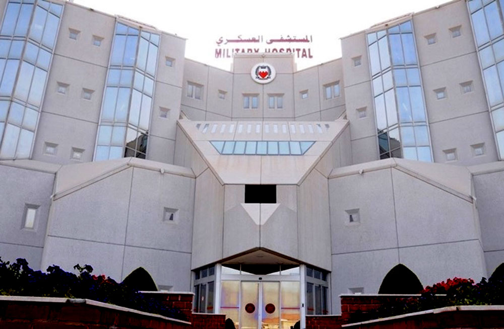
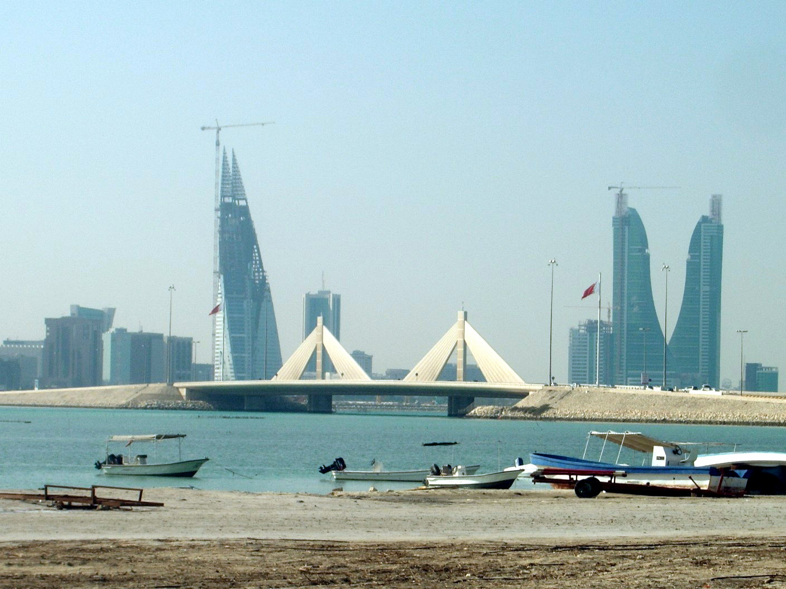

أولت مملكة البحرين العلم والتعليم اهتماما بالغا واعتبرته ركيزة أساسية تساهم بشكل فاعل في تعزيز التنمية الاقتصادية المستدامة، وتوج هذا الاهتمام الكبير بالتعليم ومؤشراته في المملكة، حيث سجّلت المركز الأول عربيا والثالث على مستوى دول الشرق الأوسط وشمال إفريقيا فيما يخص المؤشرات المتعلقة بالتعليم، بحسب تقرير مجموعة بوسطن الاستشارية بشأن تقويم التنمية الاقتصادية المستدامة، والصادر في شهر يوليو 2019.
إن إنجازات مملكة البحرين في العلم والتعليم كثيرة ومتعددة ويعود ذلك إلى التزامها بالمساوة في تعليم أبنائها وبناتها، حيث تعد البحرين أول دولة عربية تحقق التزامها بالمساواة في التعليم ضمن مؤشر تنمية التعليم للجميع 2010 التابع لهيئة الأمم المتحدة للتربية والعلم والثقافة (اليونسكو)، حيث تؤكد المملكة أن إتاحة الحصول على التعليم يأتي ضمن أولوياتها القصوى على اعتبار أن الشباب البحريني المتعلم هو مفتاح المستقبل، لذلك جعلت التعليم حقا متاحا للجميع ضمن مبادئ شروط العدالة والمساواة أمام القانون بما يتفق والمعايير الدولية في حقوق الإنسان.
إضافة إلى ذلك، فقد اهتمت مملكة البحرين بالبحث العلمي حيث أكد الرئيس المؤسس للجامعة الأهلية رئيس مجلس الأمناء البروفيسور عبدالله الحواج على أن مملكة البحرين بيئة خصبة للبحث العلمي في مختلف المجالات مع ما تتمتع به جامعاتها من دعم ومساندة حكومية من أجل الارتقاء بمسيرة البحث العلمي والظفر بحلول وأفكار فريدة من نوعها تعالج مختلف المشكلات والتحديات الاقتصادية والإدارية محليا أو عالميا.
2- مجالات التميز في الناحية الصحية

يعتبر نظام حوكمة الرعاية الصحية في البحرين نموذج فريد من نوعه وهو أحد أسباب تطور القطاع الصحي، وذلك بوجود المجلس الأعلى للصحة المعني بوضع الإستراتيجيات والاتجاهات الوطنية في القطاع الصحي. إلى جانب الهيئة الوطنية لتنظيم المهن والخدمات الصحية كمنظم للقطاع الصحي في مملكة البحرين و وزارة الصحة كمشغل رئيسي لإدارة القطاع الصحي.
تعد مملكة البحرين من الدول الرائدة في مجال الصحة نظراً لما حققته من إنجازات طوال نهضتها المشهودة، وقد حظيت الرعاية الصحية باهتمام بالغ كونها ضمن أولويات برامج الحكومة التنموية، و تم تحقيق هدف "الصحة للجميع" في أوائل التسعينيات، حيث تم تقديم خدمات صحية شاملة ولا يزال تقديمها مستمرًا في البحرين.
وتوفر مملكة البحرين رعاية صحية مجانية للمواطنين منذ ولادتهم، وقد ركزت خدماتها الصحية بشكل فريد على شرائح مختلفة من المجتمع. وقد قامت وزارة الصحة بتسهيل تلقي الرعاية الطبية لأفراد المجتمع من كبار السن في المملكة من خلال وحدات متنقلة، والتي تتضمن الزيارات المنزلية لأولئك الذين لا يمكنهم التوجه إلى المراكز الصحية. وعلاوة على ذلك، فإن وزارة العمل والتنمية الاجتماعية توفر الخدمات الاجتماعية لكبار السن، والتي تتضمن على سبيل المثال لا الحصر خدمات الرعاية النهارية للمسنين وخدمات الرعاية الإيوائية والمساعدة الاجتماعية.
وبالنسبة لذوي الاحتياجات الخاصة، فقد تم إنشاء مركز عبد الله بن علي كانو لتشخيص وتقييم الإعاقة في عام 2014 لتلبية احتياجات ذوي الإعاقة بالتعاون مع وزارة الصحة.
3- مجالات التميز في الناحية الاقتصادية

عُرِفت البحرين بأنها من أسرع الدول نمواً من الناحية الاقتصادية في العالم العربي.وذلك وفقاً للجنة الأمم المتحدة الاقتصادية والاجتماعية لغرب آسيا في يناير 2006. كما أن البحرين قد اكتسبت سمعتها كعاصمة مالية في الشرق الأوسط نتيجة لعدة عوامل، منها: القوانين الصارمة و المرنة ، الليبرالية الاقتصادية ، القوى المحلية المدربة. وقد تم مؤخراً تعزيز سمعة البحرين على أنها العاصمة المالية للشرق الأوسط من خلال مرفأ البحرين المالي. والذي يفتح آفاقاً جديدة للتنمية ويجمع تحت سقف واحد جميع الأنشطة المتعلقة بقطاع الخدمات المالية، بما في ذلك بورصة البحرين و مركز البحرين الدولي للتأمين.
بالإضافة إلى ذلك، تعد البحرين أكبر قاعدة للأعمال التجارية في الخليج بالنظر الى انه لا توجد بها ضرائب عن الشركات أو الدخل أو ضريبة القيمة المضافة أو ضريبة الاستقطاع أو تلك التي تفرض على الأرباح الرأسمالية أو الدخل، أو على الميراث أو حتى رسوم الوفاة وعرفت البحرين على كونها بيئة جاذبة للمستثمرين ومجتمع منفتح يشجع بنشاط على بعث المشاريع الخاصة.
وتعتبر البحرين أول دولة خليجية تستنفد فيها الاحتياطات النفطية وبالتالي عملت على تنويع مصادر دخلها في وقت مبكر من خلال تشجيع المشاريع الخاصة حيث بلغ إجمالي الناتج المحلي غير النفطي بها أكثر من 80٪ وتشجع كذلك بقوة على نمو القطاع الخاص من خلال السماح للأجانب بالتملك وإعادة الدخل إلى أوطانهم بنسبة 100٪، فالمملكة بأكملها عبارة عن منطقة حرة وضخمة واحدة.
4- مجالات التميز في الناحية الاجتماعية
نصت المادة (23) من العهد الدولي الخاص بالحقوق المدنية والسياسية على أن الأسرة (هي الوحدة الاجتماعية الطبيعية والأساسية في المجتمع)، ويعرف الميثاق العربي لحقوق الإنسان الأسرة بأنها (الوحدة الطبيعية والأساسية للمجتمع). ونصت المادة (5، أ) من دستور مملكة البحرين وتعديلاته لعام 2012م على أن (الأسرة أساس المجتمع، قوامها الدين والأخلاق وحب الوطن). الأسرة ركن أساسي في المجتمع وعلى أفرادها واجبات كما عليهم حقوق، وكلما صلحت الأسرة سلم المجتمع وتقدم، ومن أهم واجبات الأسرة تربية الأبناء على الفضيلة والقيم، واحترام الأنظمة والقوانين، وبث روح الثقة والمسؤولية في أنفسهم، والتواصل الاجتماعي مع الآخرين، ونبذ السلوكيات المجتمعية الخاطئة، وتنشئة الأبناء تنشئة صالحة وجعلهم أفرادًا راشدين وفاعلين في المجتمع.
إن أمن المجتمع يعتمد على أمن الأسرة واستقرارها، ولن تكون الأسرة آمنة إلا بحزمة من القوانين والتشريعات، والقانون لا يتحقق الهدف منه إلا بتنفيذه من قبل الجهات المعنية، فالقيادة السياسية الرشيدة والحكومة الموقرة وأفراد المجتمع ومؤسساته الرسمية والأهلية عيون ساهرة تحمي المرأة وتحيطها بالعناية من أجل أن تأخذ دورها المجتمعي الحقيقي.